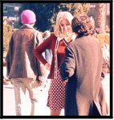
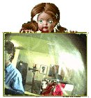
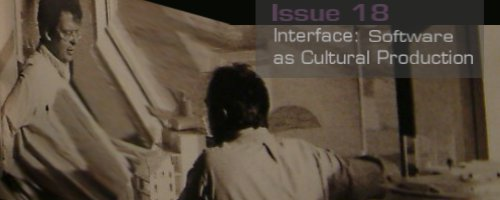
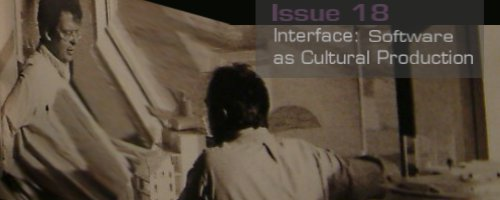

|
Interface - n. a surface that lies between two parts of matter or space and forms their common boundary.
Interface - "the controls or the contact surface of a program" [1]
Agency - 1. action, power, means; instrumentality. 2. the business of any person, firm, etc. empowered to act for another 3. the business office or district of such a person, firm, etc.
Identity - 1. the condition or fact of being the same in all qualities under consideration; sameness; oneness. 2. a) the condition or fact of being some specific person or thing; individuality. b) the condition of being the same as something or someone assumed, described, or claimed.
Role - 1. a part, or character, that an actor plays in a performance 2. a function or office assumed by someone: as in advisory role.
Thesis
The slippage and destruction of common boundaries and contact surfaces has fueled avante-garde art for decades. To understand this phenomenon it is useful to look at feminist art. Norma Broude and Mary D. Garrard write in The Power of Feminist Art, "The feminist critic, Lucy Lippard argued in 1980 that feminist art was 'neither a style nor a movement,' but instead 'a value system, a revolutionary strategy, a way of life,' like Dada and Surrealism and other nonstyles that have 'continued to pervade all movements and styles ever since.'" [2]
And like artists of other movements, feminist artists slipped the interface. Feminist art destroyed the boundaries that Modern art created between craft and art, politics and art, and content and art. Feminist artists renegotiated the contact surfaces by refusing formalism, choosing content, using collective production methods, asserting a place for the autobiographical, reclaiming craft and refusing to accept the hegemony of painting and sculpture.[3] Feminist artists also renegotiated the contact surfaces between role and identity, object and subject, of art and the real.
Feminist art is not a static designation. Feminist art theory transformed significantly from 1970 to the new millennium. The decades included shifts in approach, concerns and inclusion. Female identity was constructed variously over the decades from biology, social conditioning, and technology. The pendulum swung from the "central core" imagery of the 70's to the lack of the female body representation in the 80's, from a woman's movement united by biology to one fractured by race, sexual preference and guiding theory, from a belief that identity could be constructed from what was essentially female, biologically speaking, to a belief that no restructuring of identity was possible because all experience was colored by patriarchy. Lynn Hershman's work spans these chasms in theory with a remarkable ability to adapt to changing agendas while remaining consistently in pursuit of her core concern: constructed female identity.
Lynn Hershman is also an excellent example of a feminist artist whose work over the past thirty years has consistently dealt with the theme of interface. She began her organizational career by working on projects that slipped the interface between museum and artwork by taking the artwork out of the museum and putting it in a truly public context, outside. She received her MFA from San Francisco State in 1972 and immediately afterward, from 1972 to 1976, was the Project Director of Christo and Jean Claude's Running Fence. Concurrently, from 1973 to 1978, Hershman was the Director of another California phenomenon, the Floating Museum of San Francisco. Her next directorship from 1983 to 1989 was again in San Francisco but this time at the Inter-Arts Center at San Francisco State University. Since 1993 she's been the Appointed Senior Professor of Electronic and Digital Arts at the University of California at Davis.
While Hershman lives in California, her contributions and influence have not been confined to one geographical area. She holds several appointments at North American, Australian, and European universities and she is a Commission member at the German television channel ZDF, the French-German television channel ARTE, and the Danish Film Commission.[4]
She has received numerous awards for her work. She was the first woman to receive a tribute and retrospective at the San Francisco International Film Festival (1994) and was awarded the ZKM/Seimens Media Arts Award in 1995. In 1998 she was a Sundance Screenwriter Fellow and was also honored with the Flintridge Foundation Award for Lifetime Achievement in the Visual Arts. In 1999 she was nominated for the Independent Spirit Award and she received the prestigious Golden Nica Prix Ars Electronica in Austria. Her work is in the collection of the Museum of Modern Art, The National Gallery of Canada, The ZKM Media Museum, The Hess Collection and others.[5]
An established and valued artist, Hershman believes that "changing expectations…is one way of changing the established interface." [6] Initially, in the 70's, her own artwork focused on the interface between art and reality and between role projection and identity. In the 80's Hershman explored the boundaries between human and cyborg. In the 90's her work focused on changing the interface polarity between the viewer, voyeur, and victim. In the new millennium Hershman has focused on the idea of agency, the power of any person to act for another, and progeny, how to establish something that lives on. Each of these decades of work is worthy of further examination in light of their context. Two nbs before I begin. Firstly, coverage of thirty plus years of committed artmaking is beyond the scope of this article. I have selected only a few of Hershman's works. For a complete listing see http://www.lynnhershman.com . Secondly, all images of Hershman's work are used with her express permission. With that, feel free to click into any decade.
1970's
Simone de Beauvoir, author of The Second Sex which was published in the United States in 1953 and reprinted in 1961 and 1968, stated some ideas which informed 1970's feminist thinking: "Woman sees herself and makes her choices not in accordance with her true nature… but as man defines her…Man dooms woman to artifice…One is not born, but rather becomes, a woman." De Beauvoir's point of view was that woman's body was not for herself but for others only. In the 1970's feminist artists worked to reclaim woman's body for her own use and pleasure. Judy Chicago was one of the foremost names in this effort and was a theorist as well. Chicago believes that women's art is a product of body identification and that the use of biomorphic or centralized forms or "central core imagery" by women artists signified that they were "talking" about the body, the female body.
De Beauvoir's statement contained another idea that had equal impact. If women were constructed by men, then they could be re-constructed rightly according to the women. So women of the 1970's began asking, "Who am I?", working to get outside the frame of reference of her already constructed gender. Norma Broude and Mary Garrard assert that, "The invention of personas and the exploration of roles so prevalent in early feminist art were, on one level, a way of examining the relation between female roles and the inner self, and of clarifying their differences." [7] In the 70's Hershman worked in this area of contructed persona to explore the interface between culture, roles and personal identity.
Roberta 1970-1980
Hershman's Roberta Breitmore was a nine year performance of a simulated person whose appearance was constructed out of the "vital statistics" of numerous ordinary women. (Figure 1)[8] Roberta was a 30-year-old divorcee who, with her $1800 savings, moved from Cleveland Heights to San Francisco in 1975. Roberta had her own handwriting, checking accounts, credit cards, apartment , clothing, gestures and bad moods.
Figure 1 Roberta: Scheme
Her first live action was to place an ad in a local newspaper advertising for a roommate. As people answered her ads they became part of her fiction and she became part of their reality. She amassed forty-three letters from individuals answering her ads and experienced twenty-seven adventures (Figure 2) some of which were dangerous. She was asked to join a prostitution ring at the San Diego Zoo where, to escape her "John" she transformed to "Lynn" in a public restroom.[9]

Figure 2 Roberta in Action
Hershman variously acted the character or had others act as Roberta. Eventually four different people played Roberta. (Figure 3)[10]
According to Josephine Withers, "Breitmore was Everywoman, an antiheroine who lived in present time and had quite ordinary encounters....But in speaking the language of conventionality, Hershman's Breitmore character held up a mirror which reflected the desperation we all encountered in negotiating our lives." [11]
In fact, Hershman's experiences with Roberta in society became so negative that she offed the character in an elaborate ceremony. Rather than commit suicide which was the original script Hershman devised, Roberta was exorcised from the lives of her hosts at the grave of Lucrezia Borgia in Ferrara, Italy, by the ritual burning of photographs of the Robertas in order to cleanse all experienced victimization and to begin a life of victory.[12]
Roberta's artistic significance according to Robert Atkins of the Bay Guardian and relevance to interface lay in the fact that Hershman had "demolished the barriers separating theater, literature, painting, photography and conceptualism." [13] Allan Kaprow at Cal Arts had redefined in theory the border between art and life. In fact, he saw "The key experiment [of the 60's] was…the secularization of the entire art situation…The critical move…was the shift of art away from its familiar contexts, the studios, museums, concert halls, theaters, etc., to anywhere else in the real world." [14] Hershman's performance art had in practice eroded the boundary between the real and the artistic by moving the artwork out of the museum and into the world at large. It changed the contact surface, the interface.
1980's
While the 70's saw a reconstruction of woman "by inverting stereotypes, by reclaiming the positives and disclaiming the negatives," [15] by reclaiming women's experience, the 80's saw a rejection of all aspects of women's experience as dangerous stereotypes always already formed by patriarchy. The language of "central core imagery" as a unifying theme among feminist artists became politically incorrect in many quarters of the feminist art movement. Opponents dismissed the previous decade's work as "essentialist" because it constructed woman by her biological form rather than acknowledging her race or class as equally important in constructing a female self or recognizing the extent to which patriarchy always already formed identity. The new feminists, influenced by Lacan, Derida, Cixous and Kristeva, were called postmodernist, poststructuralist, deconstructionist and postfeminist. The antipathy between the "old" and the "new" meant a new boundary had been formed and a new interface born.
The impact of this schism yielded up many more renowned artists from non-white cultures: Judy Baca, Yolanda Lopez, and Lorna Simpson to name a few. More prominent feminist artists of the 80's were Jenny Holzer, Barbara Kruger, Sherrie Levine, Mary Kelly and Cindy Sherman. Though the form of visual expression of these artists changed from raw emotive images of the 70's to refined intellectual visual structure, the content was still feminist. "Those artists analyzed 'how meaning is produced and organized' by a theoretically patriarchal structure and therefore undermined 'the structures of domination." [16]
In the 80's Hershman explored how meaning about power is produced and organized between the viewer and the viewed and she reversed the polarity of that power. Her work changed the contact surface between both the voyeur and the viewed and between intimacy and technology, in order to undermine and in fact reverse the structures of domination.
Deep Contact 1984-1989
Deep Contact was an erotic interactive videodisk installation which "compares intimacy to technology." [17] DC required the participant to touch the computer screen to guide their experience. Touching the screen caused the sprouting of phantom limbs that became virtual connections between the viewer and the image. A surveillance camera was programmed to be switched "on" when triggered by presence. The viewer's image instantaneously appeared on the screen, displacing and replacing the image. The one who was doing the watching and according to John Berger was the one in power, suddenly became the one who was watched by the camera self, transforming the viewer from voyeur into the victim. In a deft turn, the polarity of the interface changed as the voyeur becomes the victim.
Phantom Limbs: 1986-1994
Just as Deep Contact explored the interface between intimacy and technology, Phantom Limbs explored the interface between human and machine and attempted to shift the viewer's understanding of himself or herself as not human but cyborg. These 30" by 40" black-and-white photographs showed images that merge human female bodies with a machine or piece of technology such as a camera lens, a television, a computer monitor, all familiar appliances to us now, in place of a head. These images pointed out how much of a cyborg we have already become by our reliance on these devices. Are we cyborgs when we use these appliances? Or are we humans? In 1990, half way through the creation life of these images, Christine Tamblyn wrote in Art News, "Hershman's strategic substitutions of robotic appendages for female anatomical features also allude to the dehumanization brought on by technology. The distinction between the animate and inanimate is uncannily effaced in these photomontages." [18] Hershman changed the interface between ourselves and these commonly used appliances to say something about our identity that we were not aware of and perhaps not desirous of either.
1990's
The clash between 70's style "essential" feminism and 80's style "deconstructionist" feminism repositioned some subjects and artists from outside to inside such as women of color, lesbian women, violence done to women in war and country of origin issues. However, the activist strength of the 70's was weakened by the divorce of style from the history of theory and values upon which it was based. According to Laura Cottingham, "There was a partial movement away from the austerity of the photo-and-text works that dominated 80's New York art" and a return to 70's style emotive strategies.[19] Period items were retrieved as a fashion revival.[20] In addition, the deconstruction of the deconstructionists deconstructed the feminist camp into too many small splinters.[21]
Some of the feminist artists who achieved acclaim in that decade were Janine Antoni, Kiki Smith, Shirin Neshat, and Coco Fusco. The 90's were an extremely prolific period for Hershman. She continued shifting the interface between viewer and voyeur and victim and extended her exploration of interface into projects about the boundaries between self and other with respect to agency and progeny.
Room of One's Own 1990-1993
This project continued slipping the interface and the structure of power between the viewer and the viewed. Marion "lived" in a stainless steel box approximately 2' by 2'. Within the box was a miniature bedroom scene with several objects (Figure 7).[22] At the viewer's eye level there was a movable periscope that the viewer looked through. "Looking" caused the protagonist to chide the viewer in an obnoxious voice for his persistent gaze. This slippage of the interface again changed the balance of power and repositioned the viewer/voyeur into the victim. Again the viewer/voyeur becomes the victim so that the users become "voyeurs, aggressors and victims of their actions." [23]
Hershman's work on The Dolly Clones continued this repositioning of the interface between the voyeur and the victim but adds to it the interface between human and machine.
Tillie 1995-1998 and CyberRoberta 1975-1998

Description: These two telerobotic dolls communicate in physical space and on the internet.
Viewers in physical space can see themselves on a small monitor in the dolls' environment. They can watch themselves being watched, going from victim to voyeur with the flick of an eye.
Viewers in virtual space can extend their peripheral vision beyond normal human physiology by looking through the eyes of these dolls over the internet. This is not for free however. There is a reflexive effect. As the viewer uses the doll to extend vision, his or her use of that doll turns the viewer into a visual cyborg, a being whose virtual site extends beyond physical location.
According to Hershman, "By looking at the world through the eyes of Tillie, the Telerobotic Doll or CybeRoberta, viewers not only become voyeurs, but they are effectively transformed into virtual "cyborgs".[24] Viewers literally use the dolls' eyes as a vehicle for their own remote and extended vision. Each doll is constructed so that her eyes are replaced by cameras. These become the "EYE CONS" that move the doll physically and telerobotically.
Later in the 90s, Hershman extended her exploration of interface into projects about the boundaries between self and other with respect to agency and progeny
Conceiving Ada, 1997
Written and directed by Hershman, Conceiving Ada was a "feminist film in which two women struggle to give birth to something…lasting despite the intrusion of their mothers and the constraining presence of
male lovers." [25]
Emmy was a contemporary computer scientist who was researching artificial life. By using her own genetic code, Emmy was able to collapse time and link her world directly to that of Ada Lovelace, daughter of Lord Byron and a mathematical genius who developed the world's first computer language roughly 100 years before the first computers were created.
In Conceiving Ada, Hershman recognized the forces of history and patriarchy against creating a life and a self of one's own (represented by mothers and male lovers) and recognized the ability of the protagonists (Ada and Emmy) to engage in behavior determined by self outside the patriarchal structure.
In keeping with her previous efforts to democratize art out of the galleries and museums, a strategy that Mathew Barney, maker of the Cremaster series, does not share, this video is available through common video rental channels such as Netflix.
2000's
The new millennium is barely underway and most feminist art theory and critical writings are anthologies of past writings, past artists, and past conflicts aimed at establishing a political historiography perhaps precisely because many feminist artists continue to be ignorant of the context of what has already been done and to create without any critical analysis of recontextualization.
Hershman's work continues to show that she is aware of the past such that she doesn't need to repeat it and her work explores the future. What will it be like when we can clone ourselves? What will the offspring be ontologically? Her movie Teknolust delves more deeply into the interfaces between humans and machines and the result is another slippage of the interface.
Teknolust 2002
Again, this video is accessible to the public outside of the gallery and the museum, through regular video rental channels such as Netflix: "This futuristic comedy puts a hilarious spin on recent advancements in science and technology -- namely, cloning. When Rosetta Stone (Tilda Swinton), a scientist conducting biology research, has a major breakthrough and writes a paper about it, her colleagues suspect that she's already tried out her theories in real-life experiments. Indeed, Rosetta's secretly created three clones of herself." [26]
From Hershman's point of view the plot synopsis is as follows: "Anxious to use artificial intelligence to improve the world, Rosetta Stone, a bio-geneticist, devises a recipe through which she can download her own DNA into a 'live' brew she is growing in her computer. She succeeds in breeding three beings (Self Replicating Automatons - S.R. A.'s) that are part human, part software, whom she names Ruby, Marine and Olive. They look human but are in fact intelligent machines." [27] Rosetta Stone, creates and uses the S.R.A.s as an extension of presence like a camera to an eye, like Tillie to the virtual user. This creation of intelligent machines as human-like rather than personal computer-like changes the contact surface between humans and the intelligent machines from person-appliance to person-person. Or is it a person and what makes it so? If it is a person, how would it best be trained? The use of these intelligent machines changes the contact surfaces of agency. Is the owner of Ruby responsible for what she does? Is she responsible for her programming so to speak?
This film contains a return to and exploration of pleasure in the physical body that had been purposely absent in much of the feminist artwork of the 80's, but this time it is through the eyes of an intelligent machine woman: "The only flaw in Rosetta's creation is that the S.R.A.'s need injections of male chromo found only in spermatozoa to survive. …Ruby's evolving contact with the real world introduces her to art, spirituality, and ultimately, when she meets Sandy, a lonely Xerox shop worker, the capacity to fall in love." [28]
However, these women are programmed by watching the movies designed for male visual pleasure that Laura Mulvey denounced in 1975. "As they cannot distinguish dreams from reality, Rosetta programs Ruby, via movie tapes, to seduce men in the real world and share donations with her sisters." [29]
A Velveteen Rabbit for a technological era where we're still asking whether or not our toys are alive and whether we are responsible for what they do, "All of the characters struggle to find meaning in a world where love is the only thing that makes things real. In the process they also find harmony between the real and the virtual world." [30]
Conclusion:
The slippage and destruction of common boundaries and contact surfaces has fueled Hershman's explorations of identity, role, and agency for three decades. Hershman's belief that "changing expectations…is one way of changing the established interface" has clearly informed her work in the 70's which explored the interface between art and reality and between role projection and identity, in her work of the 80's which questioned the boundaries between human and cyborgs, and in her work of the 90's which changed the interface polarity between the viewer, voyeur, and victim. In the new millennium Hershman has focused on the idea of agency, the power of any person to act for another, and progeny, how to establish something that lives on.
Jeanette Winterson wrote:
| The true artist is connected. The true artist studies the past not as a copyist nor as a pasticheur will study the past, those people are interested only in the final product, the art object, signed sealed and delivered to a public drugged on reproduction. The true artist is interested in the art object as an art process, the thing in being, the being of the thing, the struggle, the excitement, the energy, that have found expression in a particular way. The true artist is after the problem. The false artist wants it solved (by somebody else).[31] |
Perhaps the reason that Hershman continues to destroy boundaries and slip interfaces between identity and role, between voyeurs and victims, humans and cyborgs, and humans and agents is that she is connected both to the past and to the questions of the present and future. She is after the problem, because she knows it.
Footnotes
[1] Brenda Laurel, Utopian Entrepreneur, Mediawork Pamphlet Series, (Cambridge and London: The MIT Press, 2001), p. 49.
[2] Norma Broude and Mary D. Garrard, ed., The Power of Feminist Art, (New York: Harry N. Abrams Inc., 1994), p. 10.
[3] Laura Cottingham, "The Feminist Continuum: Art After 1970," in The Power of Feminist Art, ed. Norma
[4] Broude and Mary D. Garrard, (New York: Harry N. Abrams Inc., 1994), p. 276. Siemens Kulturprogramm et al., Photography After Photography: Memory and Representation in the Digital Age, (Munich: G + B Arts, 1996), p 297. and www.fondation-langlois.org.
[5] "Crew." 5 December 2002 www.teknolustthemovie.com/images/teknolust/ruby/cast/LynnHershmanLeeson
[6] E-mail interview with Lynn Hershman, 16 November 2002.
[7] Broude and Garrard, p. 22.
[8] Hershman, Lynn. "Roberta Breitmore." 5 December 2002 www.lynnhershman.com.
[9] Ibid.
[11] Josephine Withers, "Feminist Performance Art: Performing, Discovering, Transforming Ourselves," The Power of Feminist Art, ed. Norma Broude and Mary Garrard, (New York: Harry N. Abrams Inc., 1994), p. 167.
[12] www.fondation-langlois.org
[13] Robert Atkins, Bay Guardian, 13 October 1978 as quoted on Hershman, Lynn. 5 December 2002 www.lynnhershman.com.
[14] Suzanne Lacy, "Affinities: Thoughts on an Incomplete History," The Power of Feminist Art, ed. Norma Broude and Mary Garrard, (New York: Harry N. Abrams Inc., 1994), p. 268-269.
[15] Lucy Lippard, "Both Sides New: A Reprise," ed. Lucy Lippard, The Pink Glass Swan: Selected Feminist Essays on Art, (New York: The New Press, 1995), p.273.
[16] Thalia Gouma-Peterson and Particia Mathews,"The Feminist Critique of Art History", The Art Bulletin September 1987, Volume LXIX Number 3, p. 348.
[17] Hershman, Lynn. "Deep Contact." 5 December 2002 www.lynnhershman.com.
[19] Cottingham, p. 284.
[20] Emily Apter, "Questions of Feminism: Essentialism's Period," in Art and Feminism, ed. Helena Reckitt (London: Phaidon, 2001), 272.
[21] Lacy, pp. 273-274.
[22] www.lynnhershman.com
[23] E-mail interview with Lynn Hershman, 16 November 2002.
[24] Hershman, Lynn. "Tillie/CybeRoberta." 5 December 2002 www.lynnhershman.com
[25] Brussat, Frederic and Mary Ann, "Conceiving Ada." 5 December 2002 www.rottentomatoes.com
[26] "Teknolust." 5 December 2002 www.netflix.com
[27] "Synopsis." 5 December 2002 www.teknolustthemovie.com
[30] www.teknolustthemovie.com
[31] Jeanette Winterson, Art Objects: Essays on Ecstasy and Effrontery (New York: Alfred A. Knopf, 1996) p.12.
|

 
